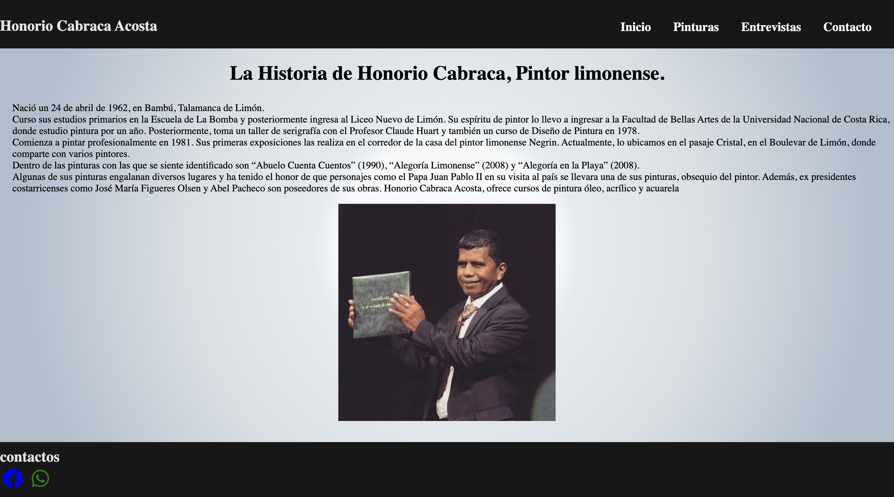
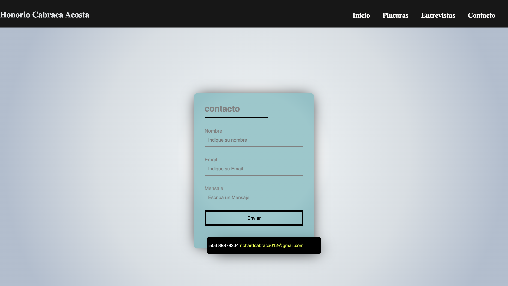
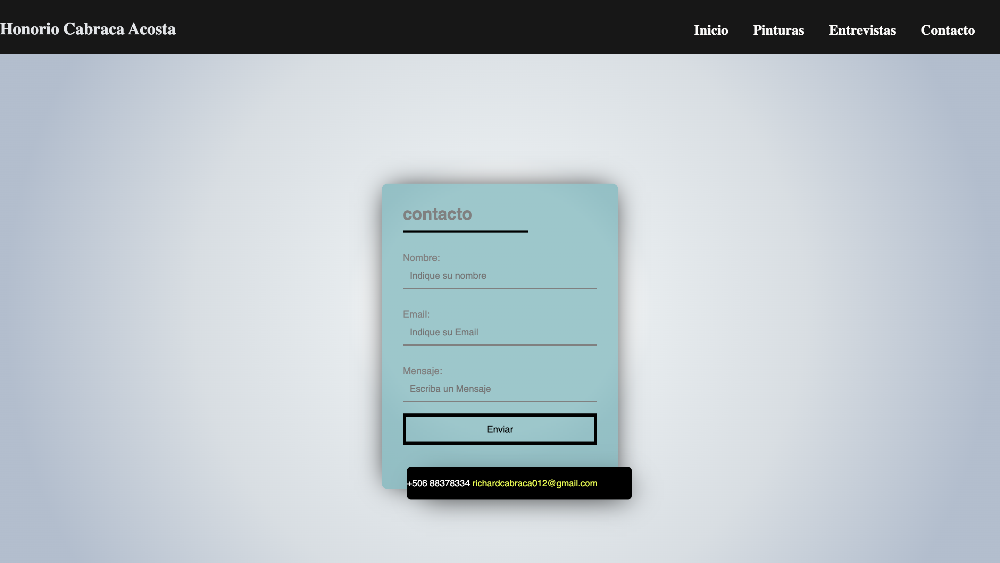
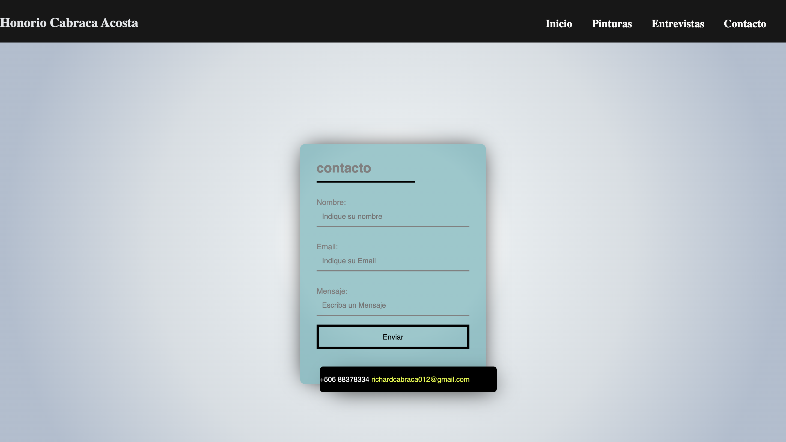

History cabraca
Cabraca paintings, this page is to know the history of Honorio Cabraca, he is a painter from Limón recognized for his paintings that over the years he has proven to be a professional artist which stands out since he has been in important exhibitions both outside and inside the country and is a way to make known through this medium The art he makes is inspired by a specific province and it is limón.

 


